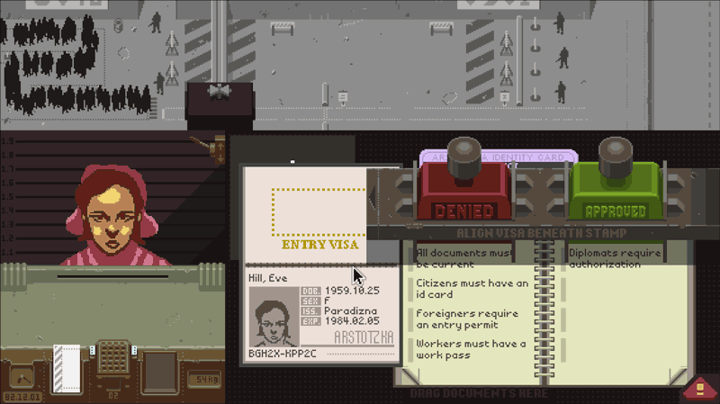

Papers, Please was created by a solo indie developer Lucas Pope. Pope is an American who has moved around various countries in Asia. He has also worked as a developer on triple A video game titles at Naughty Dog.
In Papers, Please you play as an immigration officer in a fictional Eastern Bloc-esque country racked with war and social struggles. As you go through the game and the narrative plays out you are given more instructions from the totalitarian government, to require more papers, to perform body scans of people from certain nations etc. As a result of the story and the moral questions it develops for the player, the game has often been referred to as an "empathy game", or a game that makes you empathise with a certain character or role or someone in this situation.
I was reminded of this game through a video I watched about dithering, which references a later video game by Lucas Pope. It is an interesting game that plays out entirely through processing documents and limited interactions with the individuals seeking to cross the border. One thing that intrigued me was something that has come up in my readings, how Pope saw this mundane thing that is checking passports and visas, and then created a piece of interactive media that tells a story through it in an engaging way. Also, before I even heard of the term "empathy game" I thought this game was an interesting examples of using worldbuilding (not quite futuring as it is a past fiction) to engage players in considering other types of life experience. What does it feel like to have someone come up to you after her husband has been let in to your country but her papers are wrong? What should you do? It's just a video game so you can act how you like, but regardless of what you do, the question has been brought to your mind.